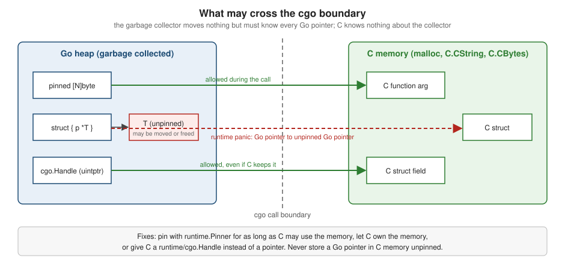

cgo and C Interoperability
|
This content was generated with the assistance of AI and should be verified against the official documentation before being relied on in production. |
This page is written against Go 1.27 (go1.27.2), checked on 2026-10-18; every go.mod shown has the line go 1.27.
cgo is the part of the Go toolchain that lets a Go package call C code and lets C code call back into Go. It is how
Go programs use operating-system libraries that only have a C interface (graphics, audio, hardware, SQLite,
libgit2, the macOS and Windows platform frameworks), and how a Go package is shipped as a C library for programs
written in other languages. It is also the most expensive and least Go-like feature of the language: it changes how
a program is built, how it is cross-compiled, what its binary links against, how fast a call is, and what the
garbage collector and the scheduler are allowed to do. This page explains how it works, the pointer-passing rules
that keep the garbage collector safe, the cost of crossing the boundary, the build consequences and the alternatives.
It builds on unsafe and Low-Level Programming
(unsafe.Pointer, unsafe.Slice, unsafe.String) and on
Memory Management and Garbage Collection
(why Go pointers are special). The related pages are
Pointers and Value Semantics,
Structs and Embedding (layout and padding),
Goroutines and the Scheduler (what a blocked thread
means), The go Command, Builds and Cross-Compilation,
Directives, Code Generation and Embedding,
Formatting, Vet, Fix and Static Analysis,
Benchmarks, Fuzzing and synctest,
Profiling, Tracing and Diagnostics,
Performance and PGO and
WebAssembly and WASI (the other way of running foreign code
next to Go).
Every example was compiled, vetted with go vet and run with Go 1.27.2 on an Apple-silicon Mac (macOS, arm64,
Apple clang as the C compiler); the output shown is the real output, and the compiler, vet and runtime messages are
copied from real runs. Addresses, byte counts, timings and file sizes are machine-specific. Examples that need a
Linux toolchain, a library that is not installed here or a second machine are labelled as not run. The go.mod of
the example module is:
module example.com/shelf
go 1.27When cgo is the right tool
cgo is a tool for integration: reuse a C library that already exists, talk to a platform API that has no Go binding,
or publish Go code to C programs. It is not a tool for speed. The Go toolchain deliberately does not treat it as
ordinary Go, and the saying that "cgo is not Go" summarizes the trade (the book Learning Go by Jon Bodner reaches
the same conclusion in its chapter on unsafe, reflect and cgo: use cgo to integrate with existing C libraries,
not to make Go code faster).
What the price is:
-
The build is no longer just
go build. A C compiler must be installed and must match the target. Cross-compiling stops being a matter of two environment variables (see Building). -
Every call crosses a boundary. A cgo call costs far more than a Go call, cannot be inlined, and ties up an operating-system thread while it runs (see The cost of a call).
-
The garbage collector cannot see through the boundary. Go memory handed to C is subject to the pointer-passing rules, and C memory is never collected (see The pointer-passing rules).
-
Many Go tools see less. The race detector does not instrument C code, escape analysis cannot look inside a C function (
go build -gcflags=-mcan say nothing about it), profiles show C time as one opaque frame, andgo testcannot useimport "C"in test files. -
The failure modes are those of C. A buffer overflow in C code, a use after free or a data race in a library is a crash or silent corruption of the whole process, not a Go panic that
recovercan handle.
The alternatives, in the order in which they are usually worth trying:
| Alternative | Use it when | Consequence |
|---|---|---|
A pure Go implementation or a Go port of the library |
One exists, is maintained and is fast enough; the library is small (checksums, compression, parsers) |
Static, cross-compilable builds; the usual tools work. Often the best answer |
Run the program: |
The tool is a command-line program ( |
Isolation and a simple build; process start-up cost and text or binary protocols |
A network protocol: gRPC, HTTP, a Unix socket |
The code lives in another service or sidecar |
Language-independent and independently deployable; latency, serialization and operations |
WebAssembly ( |
Running untrusted or portable code with a sandbox |
|
|
The "C API" is just the operating-system call interface |
No C compiler; platform-specific files with build constraints |
cgo |
The only practical way to use a native library or to expose Go to C |
Everything on the previous list of prices |
Source: The Go Blog: C? Go? Cgo! and cmd/cgo.
Hello, C: import "C" and the preamble
A Go file uses cgo when it imports the pseudo-package "C". The comment immediately above the import is called the
preamble: it is C code that cgo compiles and makes visible to the Go file, with every name declared in it available
as C.name. The shelf library below validates ISBN-10 check digits in C (the same logic that the
Benchmarks, Fuzzing and synctest page fuzzes in Go) and calls it
from a Go wrapper.
package main
/*
#include <stdlib.h>
#include <string.h>
// isbn10_valid reports whether s is a well-formed ISBN-10 with a correct check digit.
static int isbn10_valid(const char *s) {
if (strlen(s) != 10) {
return 0;
}
int sum = 0;
for (int i = 0; i < 10; i++) {
int d;
if (s[i] >= '0' && s[i] <= '9') {
d = s[i] - '0';
} else if (i == 9 && s[i] == 'X') {
d = 10;
} else {
return 0;
}
sum += d * (10 - i);
}
return sum % 11 == 0;
}
*/
import "C"
import (
"fmt"
"unsafe"
)
// ValidISBN10 asks the C implementation whether s is a valid ISBN-10.
func ValidISBN10(s string) bool {
cs := C.CString(s) // malloc'ed copy with a trailing NUL
defer C.free(unsafe.Pointer(cs))
return C.isbn10_valid(cs) != 0
}
func main() {
for _, s := range []string{"0306406152", "080442957X", "030640615X", "12345"} {
fmt.Printf("%-12s %v\n", s, ValidISBN10(s))
}
fmt.Printf("%T %T\n", C.int(0), C.size_t(0))
}Output (the types in the last line show that C.int is a distinct Go type, not int, and that C.size_t is the
platform’s unsigned long):
0306406152 true
080442957X true
030640615X false
12345 false
main._Ctype_int main._Ctype_ulongThe rules that this small program already follows:
-
The preamble must touch the import. Only a comment that directly precedes
import "C", with no blank line between them, is the preamble. Both the/* ... */form and a run of//lines work. With a blank line the comment is a plain comment and the C names are unknown. -
The import of
"C"stands alone. It is conventionally not grouped with other imports (a grouped import is allowed but then the comment must precede the wholeimport (line, which is hard to read). -
Static functions are available, static variables are not. The preamble may contain any C, including definitions of functions, so a
staticfunction can be used from Go; astaticvariable cannot be referenced from Go (declare the variable non-static or wrap it in an accessor function). -
C names keep their C spelling.
C.isbn10_validis the C function; names starting with a lower-case letter are fine. The prefixesstruct_,union_,enum_andsizeof_are reserved for the forms described below. -
The C memory returned by
C.CStringis yours to free.C.CStringallocates withmalloc; the matchingC.freeneeds<stdlib.h>in the preamble and anunsafe.Pointerconversion.
Forgetting the first rule is a common beginner mistake, and the error is not obvious. This file separates the comment from the import with a blank line:
package main
// #include <stdlib.h>
import "C"
func main() {
_ = C.abs(-3)
}The real error from go build:
# example.com/shelf
./main.go:8:6: could not determine what C.abs refers toSource: cmd/cgo.
What the go command does with it
go build notices that a package imports "C" and runs an extra stage before the Go compiler: the cgo tool
reads the Go files, asks the C compiler what every C.name means (types, sizes, constants), and writes Go and C glue
code. Then the C compiler builds the glue and the package’s own C files, and the linker links the lot. The generated
files can be inspected with go tool cgo -objdir <dir> main.go (here for the callback example used later on this
page):
_cgo_export.c _cgo_export.h _cgo_gotypes.go _cgo_main.c
main.cgo1.go main.cgo2.c_cgo_gotypes.go defines the Go types for the C types the file uses (type _Ctype_int int32,
type _Ctype_ulong uint64, and so on) and a Go wrapper for every C function, which is where the cost of a call comes from.
The wrapper for C.scan_loans in that example is short:
//go:cgo_unsafe_args
func _Cfunc_scan_loans(p0 _Ctype_int, p1 *[0]byte, p2 _Ctype_uintptr_t) (r1 _Ctype_void) {
_cgo_runtime_cgocall(_cgo_a36c3a492804_Cfunc_scan_loans, uintptr(unsafe.Pointer(&p0)))
if _Cgo_always_false {
_Cgo_use(p0)
_Cgo_use(p1)
_Cgo_use(p2)
}
return
}(The hash in the name is generated and differs between builds.) main.cgo1.go is the user’s file with every C.name
rewritten to the corresponding _Cfunc_ or _Ctype_ name, and main.cgo2.c is the C side of the wrappers. This is
generated code for understanding only, and it must not be edited or committed: the go command regenerates it on
every build.
go build -x shows the same stage as it runs: one cgo invocation, several clang (or gcc) invocations with
-fPIC and the target -arch, and the link step. The C compiler is taken from the CC environment variable
(go env CC, clang on macOS and gcc on most Linux systems), the C++ compiler from CXX.
Source: cmd/cgo: Using cgo directly.
The #cgo directives
Lines of the form #cgo ... in the preamble configure the C toolchain for that package. They are not C: cgo
removes them before the preamble reaches the compiler.
// #cgo CFLAGS: -DLOAN_LIMIT=5 -I${SRCDIR}/include
// #cgo linux LDFLAGS: -lm
// #cgo darwin LDFLAGS: -framework CoreFoundation
// #cgo pkg-config: sqlite3
// #include <sqlite3.h>
import "C"(Shown for syntax; not compiled here because it needs sqlite3 and pkg-config.)
| Directive | Meaning |
|---|---|
|
Flags for compiling the package’s C, C++ or Fortran. Preprocessor flags ( |
|
Linker flags ( |
|
Ask the |
|
A directive prefixed with build constraints (operating system, architecture, tags) applies only there |
|
Replaced by the absolute path of the directory with the source file, so the package can link a library it ships |
|
Promises about a C function that make calls cheaper (Go 1.24, see noescape and nocallback) |
For security, a #cgo line may only use a safe subset of flags (-D, -U, -I, -l and a few others) from the
source: an unfamiliar flag fails the build. The CGO_CFLAGS_ALLOW and CGO_CFLAGS_DISALLOW environment variables
(and their CPPFLAGS, CXXFLAGS, FFLAGS and LDFLAGS counterparts) hold regular expressions that widen or narrow
the set, and the CGO_CFLAGS, CGO_LDFLAGS (and similar) variables add flags from the environment, which are not
restricted. Package-specific flags belong in the directive, so that the package builds in an unmodified environment;
the environment variables are for the person doing the build.
C and C++ files in the package
When a package contains a Go file that imports "C", the go command also builds the other languages' files in the
same directory: .c, .s, .S and .sx with the C compiler, .cc, .cpp and .cxx with the C++ compiler,
.f, .F, .for and .f90 with the Fortran compiler. Headers (.h, .hh, .hpp, .hxx) are not compiled by
themselves but changing one rebuilds the package. All of these must sit in the package directory itself (not a
subdirectory), because a change elsewhere does not trigger a rebuild.
Putting the C code in its own files, with a header the Go file includes, keeps the preamble short and is the
usual structure for anything beyond a few lines. The scanner below lives in scan.c; the header declares it:
#ifndef SCAN_H
#define SCAN_H
#include <stdint.h>
typedef void (*visit_fn)(uintptr_t handle, int book_id);
// scan_loans calls fn once for each of the n overdue book ids, passing handle back unchanged.
void scan_loans(int n, visit_fn fn, uintptr_t handle);
#endif#include "scan.h"
void scan_loans(int n, visit_fn fn, uintptr_t handle) {
for (int i = 0; i < n; i++) {
fn(handle, 100 + i);
}
}C++
cgo speaks C. To use C++, put the C++ in a .cpp file in the package and expose it through a C interface:
extern "C" functions with C types only. The header is shared by both languages through an #ifdef __cplusplus guard.
Here a C++ file sorts ids with std::sort:
#ifndef SORTER_H
#define SORTER_H
#ifdef __cplusplus
extern "C" {
#endif
// sort_ids sorts n ids in place with std::sort.
void sort_ids(int *ids, int n);
#ifdef __cplusplus
}
#endif
#endif#include "sorter.h"
#include <algorithm>
extern "C" void sort_ids(int *ids, int n) {
std::sort(ids, ids + n);
}package main
// #cgo CXXFLAGS: -std=c++17
// #cgo linux LDFLAGS: -lstdc++
// #include "sorter.h"
import "C"
import "fmt"
func main() {
ids := []C.int{42, 7, 19, 3}
C.sort_ids(&ids[0], C.int(len(ids)))
fmt.Println(ids)
}Output:
[3 7 19 42]The CXXFLAGS directive picks the language standard and the linux LDFLAGS line links the C++ standard library (the
Linux line was not exercised on this Mac; on macOS the go tool links libc++ itself, and an explicit
-lc++ only produces a duplicate-library linker warning). A Go package that mixes C++ exceptions with Go panics
needs care: an exception must not unwind through Go frames, so catch every exception inside the extern "C" wrapper
and return an error code.
Source: cmd/cgo.
Types and conversions
The type system on the Go side of the boundary is explicit: every C type is a distinct, unexported Go type, and
conversions are written out. The mapping, from the cmd/cgo documentation:
| C | Go name in cgo | Underlying Go type here |
|---|---|---|
|
|
|
|
|
|
|
|
|
|
|
|
|
|
|
|
|
Whatever the platform defines them as (on this Mac |
|
|
|
|
|
A Go struct, a byte array of the union’s size, an unsigned integer type ( |
|
|
A constant holding the size of the type, computed by the C compiler |
|
|
A Go constant (only when the macro is a simple constant expression) |
Pointer to function |
|
Can be stored and passed back to C, but not called from Go |
Because C.int is not int, arithmetic needs conversions: int(C.strlen(cs)), C.size_t(len(buf)). The compiler
reports a mismatch as an ordinary type error. The sizes of the C types follow the target platform’s C compiler
(C.long is 32 bits on Windows and 64 bits on Linux and macOS), so a Go program must never assume
unsafe.Sizeof(C.long(0)). C types do not cross package boundaries: the same C type used in two Go packages gives two
different Go types, so exported functions of a Go package must not expose C types and should convert at the edge.
Since Go 1.24 the compiler also rejects a method whose receiver is a cgo-generated type, including through an alias.
Strings, bytes and structs in one example
The next program exercises the conversions and the C type constructs: strings in both directions, GoStringN and
GoBytes with an explicit length, a struct with a field named type (a Go keyword, reached with a leading
underscore), an enum, a union (a byte array in Go), #define constants, sizeof, and errno returned as a second
result.
package main
/*
#include <errno.h>
#include <stdint.h>
#include <stdlib.h>
#include <string.h>
enum loan_state { LOAN_ACTIVE, LOAN_RETURNED = 5, LOAN_LOST };
struct loan {
int32_t book_id;
char member[16];
int type; // "type" is a Go keyword: Go sees the field as _type
enum loan_state state;
double fine;
};
union cell {
int32_t i;
float f;
uint8_t raw[8];
};
#define MAX_LOANS 3
#define LIBRARY_NAME "Shelf Central"
static void loan_init(struct loan *l, int32_t id, const char *member) {
memset(l, 0, sizeof *l);
l->book_id = id;
strncpy(l->member, member, sizeof l->member - 1);
l->state = LOAN_ACTIVE;
}
static int parse_count(const char *s) {
char *end;
errno = 0;
long n = strtol(s, &end, 10);
if (*end != '\0') {
errno = EINVAL;
return -1;
}
return (int)n;
}
*/
import "C"
import (
"fmt"
"unsafe"
)
func main() {
// Strings and byte slices are copied across the boundary.
cs := C.CString("shelf")
defer C.free(unsafe.Pointer(cs))
fmt.Println(C.GoString(cs), C.GoStringN(cs, 3), C.GoBytes(unsafe.Pointer(cs), 5))
cb := C.CBytes([]byte{1, 2, 3})
defer C.free(cb)
// Structs, enums, unions, #define constants and sizeof.
var l C.struct_loan
member := C.CString("ada")
defer C.free(unsafe.Pointer(member))
C.loan_init(&l, 42, member)
fmt.Println(l.book_id, C.GoString(&l.member[0]), l._type, l.state == C.LOAN_ACTIVE)
var st C.enum_loan_state = C.LOAN_LOST
fmt.Println(st, C.LOAN_RETURNED, C.MAX_LOANS, C.LIBRARY_NAME)
fmt.Println(C.sizeof_struct_loan, unsafe.Sizeof(l), len(C.union_cell{}))
// errno comes back as a second result.
n, err := C.parse_count(cs)
if n < 0 { // check the result first; errno may be set even on success
fmt.Println("parse_count failed:", err)
}
good := C.CString("17")
defer C.free(unsafe.Pointer(good))
n, err = C.parse_count(good)
fmt.Println(n, err)
}Output:
shelf she [115 104 101 108 102]
42 ada 0 true
6 5 3 Shelf Central
40 40 8
parse_count failed: invalid argument
17 <nil>What each line shows:
-
C.GoStringandC.GoStringNcopy a NUL-terminated or explicitly sized C string into a Go string;C.GoBytescopies raw bytes into a[]byte. The copy means the Go value stays valid after the C memory is freed. -
C.CStringandC.CBytesallocate withmallocand copy the Go data in. They are the only places where Go data is copied for C automatically, and the caller frees the result, typically withdefer C.free(unsafe.Pointer(p)).C.CBytesreturns anunsafe.Pointer, whichC.freetakes directly. -
A field named
typein the C struct isl._typein Go. Bit-fields and misaligned members cannot be expressed in Go and are omitted from the Go struct (replaced by padding), so write C accessor functions for them. -
The union
C.union_cellis a[8]byte(its length printed as8); reading a member means converting the bytes, for example with*(*C.int32_t)(unsafe.Pointer(&u[0])), or better, writing small C helpers. -
The enumeration constants (
C.LOAN_ACTIVE,C.LOAN_RETURNED) are Go constants;C.enum_loan_stateis an integer type. This is not a Goiotaenum: there is noStringmethod and no exhaustiveness. Define a Go type with the same values for the public API (see Variables, Constants and iota). -
C.sizeof_struct_loanequalsunsafe.Sizeof(l): cgo lays the Go struct out exactly like the C one, padding included (see Structs and Embedding and, for the C side, Memory Model and Alignment). -
A C function can be called in a two-value context to receive
errnoas anerror(asyscall.Errno). Check the function’s result first:errnomay be non-zero even when the call succeeded, which is the opposite of the usual Go convention. Hereparse_countreturns-1for a bad string, so theerris meaningful only in that branch.C.mallocis special: it never returns nil (a failed allocation crashes the program like a Go out-of-memory) and so it has no two-value form.
Source: cmd/cgo: Go references to C.
Things that are not callable or not representable
-
Variadic C functions (
printf,snprintf) cannot be called from Go. Write a fixed-signature C wrapper (see the next example). -
Function pointers cannot be called from Go, but a Go variable of type
C.visit_fn(or*[0]byte) can hold one and pass it to C, and C can call it. This is how callbacks work (see Calling Go from C). -
Fixed-size array parameters in C are really pointers. Pass
&x[0], notx. -
Go structs cannot embed C types as fields, and Go types cannot be used in C struct definitions.
-
A few C types are
uintptrin Go, because their values are not always real pointers and the garbage collector would be confused by them: the CoreFoundation*Reftypes on macOS, the JNI object types (jobject,jstringand the others) and the EGL types. They are initialized with0, notnil, and all operations on them happen in C. -
128-bit integers (
__int128_t) are[16]byte.
Borrowing a Go string, wrapping variadics and viewing C memory
C code can read a Go string without copying it if a function declares a parameter of the special type _GoString_.
Inside the preamble, _GoStringLen and _GoStringPtr return the length and a pointer to the bytes. The bytes are not
NUL-terminated and must not be modified or retained after the call returns. The same example wraps the variadic
snprintf in a fixed-signature function, and shows the two directions of slice conversion: C memory viewed as a Go
slice with unsafe.Slice (no copy; the garbage collector does not own the memory, so it is freed with C.free), and
Go memory passed to C by the address of its first element:
package main
/*
#include <stdio.h>
#include <stdlib.h>
#include <string.h>
// count_vowels borrows the bytes of a Go string without copying them.
static size_t count_vowels(_GoString_ s) {
size_t n = _GoStringLen(s);
const char *p = _GoStringPtr(s);
size_t count = 0;
for (size_t i = 0; i < n; i++) {
if (strchr("aeiouAEIOU", p[i]) && p[i] != '\0') {
count++;
}
}
return count;
}
// Variadic C functions cannot be called from Go; wrap them.
static int format_shelf_mark(char *buf, size_t size, const char *section, int row, int slot) {
return snprintf(buf, size, "%s-%02d-%03d", section, row, slot);
}
static int *make_ids(int n) {
int *ids = malloc(n * sizeof *ids);
for (int i = 0; i < n; i++) {
ids[i] = 1000 + i;
}
return ids;
}
static int sum_ints(const int *p, int n) {
int s = 0;
for (int i = 0; i < n; i++) {
s += p[i];
}
return s;
}
*/
import "C"
import (
"fmt"
"unsafe"
)
func main() {
fmt.Println(C.count_vowels("The Left Hand of Darkness"))
var buf [32]C.char
section := C.CString("SF")
defer C.free(unsafe.Pointer(section))
n := C.format_shelf_mark(&buf[0], C.size_t(len(buf)), section, 7, 42)
fmt.Println(n, C.GoString(&buf[0]))
// C memory viewed as a Go slice: no copy, and Go's GC does not own it.
ids := C.make_ids(4)
defer C.free(unsafe.Pointer(ids))
view := unsafe.Slice((*int32)(unsafe.Pointer(ids)), 4)
view[0] = 1
fmt.Println(view, C.sum_ints(ids, 4))
// Go memory passed to C: pass the address of the first element, not the slice.
goIDs := []C.int{1, 2, 3}
fmt.Println(C.sum_ints(&goIDs[0], C.int(len(goIDs))))
}Output:
6
9 SF-07-042
[1 1001 1002 1003] 3007
6The unsafe.Slice call replaces the older technique of casting a pointer to a hand-built slice header, which
the vet unsafeptr check and the unsafe and Low-Level Programming
page both discourage: unsafe.Slice(ptr, n) (Go 1.17) is the safe, checked way to build a slice over n elements at
ptr. Modifying view[0] changed the C array (it printed in the sum), which confirms there is no copy.
Source: unsafe.Slice and cmd/cgo.
Calling Go from C
A Go function is made callable from C with an //export comment. cgo generates a C declaration for it in the header
_cgo_export.h, which the package’s C files can include (and, for a library, the build tool writes under a name you
choose, see Building Go as a C library).
The example shows the most useful pattern, a callback. The C scanner reports each overdue book by calling a
function pointer; Go supplies an exported function; the Go state travels through C as a cgo.Handle, an integer that
refers to a Go value in a table inside the runtime.
package main
// #include "scan.h"
//
// // Only declarations are allowed in a file that uses //export.
// extern void goVisit(uintptr_t handle, int book_id);
import "C"
import (
"fmt"
"runtime/cgo"
)
// Overdue collects book ids reported by the C scanner.
type Overdue struct {
IDs []int
}
//export goVisit
func goVisit(handle C.uintptr_t, bookID C.int) {
o := cgo.Handle(handle).Value().(*Overdue)
o.IDs = append(o.IDs, int(bookID))
}
func main() {
o := &Overdue{}
h := cgo.NewHandle(o) // an integer that C can store; the Go value stays in Go memory
defer h.Delete()
C.scan_loans(3, C.visit_fn(C.goVisit), C.uintptr_t(h))
fmt.Println(o.IDs)
}Output:
[100 101 102]How the pieces fit:
-
The preamble of a file that contains
//exportmust contain declarations only, never definitions. cgo copies the preamble into two different C output files, so a definition would be compiled twice and fail at link time with duplicate symbols. That is whyextern void goVisit(...)is declared in the preamble and the C code lives inscan.c. A C file that wants the exported declarations includes"_cgo_export.h". -
C.visit_fn(C.goVisit)converts the address of the exported Go function to the C function-pointer type. The Go function can not be called asC.goVisit(...)directly from Go; Go calls its own function the ordinary way. -
runtime/cgo.Handleis how Go state reaches the callback.cgo.NewHandle(v)storesvin a table and returns auintptr-sized integer, which can be given to C and stored there freely (it is not a Go pointer). The callback recovers the value withh.Value()and the owner callsh.Delete()when the C side can no longer use the handle. Never pass a Go pointer to the value itself, and never store Go state in a C global. -
Parameter types of an exported function should be C types or Go types with a C counterpart. Go structs and arrays are not supported (use C structs and pointers), strings arrive as
GoStringin C, slices asGoSlice, and a function with several results becomes a C function returning a struct named<name>_return. -
A callback may block, spawn goroutines and use any Go feature. If it panics and nothing recovers inside Go, the panic does not propagate through the C frames; the program crashes. Recover inside the exported function if the C caller must survive, and translate the failure into a C return code.
-
A C thread that the Go runtime did not create may also call an exported function: the runtime attaches the thread on demand. The thread has no goroutine identity between calls, so thread-local state in Go is meaningless there.
Source: cmd/cgo: C references to Go and runtime/cgo.Handle.
The pointer-passing rules
The garbage collector needs to know where every pointer to Go memory is. C code can neither be scanned nor told when a Go object moves, is freed or is reachable only from C. The rules therefore restrict what may cross the boundary, and the runtime checks them dynamically. The vocabulary:
-
A Go pointer points to memory allocated by Go (
new,&T{}, the address of a local variable or a slice element). -
A C pointer points to memory allocated by C (
C.malloc,C.CString, a C global). Whether a pointer is a Go pointer or a C pointer is a property of the memory, not of its type. -
Some Go values always contain Go pointers: interfaces, channels, maps and functions. Strings, slices, arrays and structs may contain them depending on their contents.
-
Pinned memory is memory that the garbage collector will not move or free while it is pinned.

The rules, as of Go 1.27:
| Situation | Allowed? |
|---|---|
Pass a Go pointer to a C function when the memory it points to contains no unpinned Go pointers |
Yes. The memory is pinned for the duration of the call |
Pass a Go pointer to memory that contains a Go pointer to unpinned memory (a struct with a pointer, a slice of strings) |
No: runtime panic, unless the inner pointers are pinned |
Pass a pointer to a struct field |
The memory considered is that field, not the whole struct |
Pass a pointer to an array or slice element |
The memory considered is the whole backing array |
C keeps a Go pointer after the call returns |
Only if the memory is pinned with |
C keeps a string, slice, channel or map |
Never (these cannot be pinned for C’s use) |
Go code called from C stores a Go pointer to unpinned memory in C memory |
No |
Go code called from C stores |
Yes |
Go code called from C returns a Go pointer |
Only to pinned memory |
Before Go 1.21 the same rules were written without the word "pinned": the memory was exempt from the check only for
the duration of the call, and a pointer that C retained was simply forbidden. runtime.Pinner, added in Go 1.21,
turned the restriction into a feature: a pinned object can be given to C and kept by C for as long as the
Pinner has not unpinned it. Older articles that say "C code may not keep a Go pointer, period" describe the earlier
state.
A violation, and two fixes
The struct below holds a pointer to a Go byte slice. Passing a pointer to the struct breaks the rule, because the struct contains a Go pointer to memory that is not pinned. Two fixes follow: pin what the struct points to for the duration of the call, or let C own the memory.
package main
/*
#include <stddef.h>
#include <stdlib.h>
#include <string.h>
struct request {
char *title;
size_t n;
};
static size_t title_len(struct request *r) {
return strlen(r->title);
}
*/
import "C"
import (
"fmt"
"runtime"
"unsafe"
)
func tryCall(name string, f func()) {
defer func() {
if r := recover(); r != nil {
fmt.Printf("%s: panic: %v\n", name, r)
}
}()
f()
fmt.Printf("%s: ok\n", name)
}
func main() {
title := []byte("Dune\x00")
// Violation: the struct is passed, and it contains a Go pointer to memory that is not pinned.
tryCall("unpinned", func() {
req := C.struct_request{title: (*C.char)(unsafe.Pointer(&title[0]))}
fmt.Println(C.title_len(&req))
})
// Fix 1: pin what the struct points to for the duration of the call.
tryCall("pinned", func() {
var p runtime.Pinner
defer p.Unpin()
p.Pin(&title[0])
req := C.struct_request{title: (*C.char)(unsafe.Pointer(&title[0]))}
fmt.Println(C.title_len(&req))
})
// Fix 2: let C own the memory.
tryCall("c memory", func() {
req := (*C.struct_request)(C.calloc(1, C.sizeof_struct_request))
req.title = C.CString("Dune")
fmt.Println(C.title_len(req))
C.free(unsafe.Pointer(req.title))
C.free(unsafe.Pointer(req))
})
}Output, with the default runtime checks (GODEBUG=cgocheck=1):
unpinned: panic: runtime error: argument of cgo function has Go pointer to unpinned Go pointer
4
pinned: ok
4
c memory: okWith the checks turned off by GODEBUG=cgocheck=0 the same program prints unpinned: ok: the violation is still a
violation, but nothing detects it. The C function here only reads the string during the call, so it would work
by luck; with a concurrent garbage collection that moves or frees the object, or with C retaining the pointer, it
would corrupt memory.
Notes on the three variants:
-
p.Pin(&title[0])pins the object that holds the bytes. APinnercan pin many objects,Unpinreleases all of them, and the samePinnercan be reused. Keep thePinneritself reachable for as long as C may use the memory (defer p.Unpin()does that). An unreachablePinnerunpins its objects automatically, which would be too soon. -
Pinaccepts only a pointer: a nil argument, a non-pointer value or an object allocated in an arena panics with a message startingruntime.Pinner:. A pointer to memory that is not on the Go heap (a global, C memory) needs no pinning, and pinning it has no effect. -
The "C memory" variant allocates the struct with
C.calloc, so the struct is not Go memory at all. Everything inside it may then point anywhere C likes, provided Go does not store an unpinned Go pointer into it.
Source: runtime.Pinner and cmd/cgo: Passing pointers.
What the checker catches, and how to see more
The default check, cgocheck=1, is cheap: it examines the arguments of cgo calls and the results of exported Go
functions. It does not notice the case that is the most dangerous, a Go pointer stored into C memory behind the
checker’s back. The program below stores a pointer to a Go array into a calloc'd C struct. With default settings it
prints its message and exits normally:
package main
/*
#include <stdlib.h>
struct slot {
char *title;
};
*/
import "C"
import (
"fmt"
"unsafe"
)
func main() {
slot := (*C.struct_slot)(C.calloc(1, C.sizeof_struct_slot))
defer C.free(unsafe.Pointer(slot))
title := new([8]byte)
// Storing a Go pointer in C memory breaks the rules; only cgocheck=2 notices the store itself.
slot.title = (*C.char)(unsafe.Pointer(title))
fmt.Println("stored a Go pointer in C memory")
}Default output:
stored a Go pointer in C memorySource: cmd/cgo: Passing pointers.
Rebuilding with the thorough checker, selected at build time by the cgocheck2 experiment, catches the write itself:
GOEXPERIMENT=cgocheck2 go run .write of unpinned Go pointer 0x73248931e020 to non-Go memory 0x1028113a0
fatal error: unpinned Go pointer stored into non-Go memory
runtime stack:
runtime.throw({0x102249715?, 0x0?})
/Users/albertoirurueta/sdk/go1.27.2/src/runtime/panic.go:1243 +0x38 fp=0x16dc5e420 sp=0x16dc5e3f0 pc=0x102214b28
...(The addresses and the long stack trace that follows are machine-specific and are abbreviated here.)
| Setting | Where set | What it does |
|---|---|---|
|
At run time (the default) |
Cheap checks of cgo call arguments and results |
|
At run time |
Disables the checks. Use only to measure their cost |
|
At build time ( |
Complete checking, including every pointer write into non-Go memory. Slower; use it in CI tests of cgo packages |
|
At vet time |
Reports passing a Go chan, map, func or slice to C, directly or through a pointer, array or struct |
Go 1.21 moved the complete checker out of GODEBUG (where cgocheck=2 was a start-up setting) to the
cgocheck2 experiment: programs and books that say GODEBUG=cgocheck=2 describe a mode that no longer exists.
The vet analyzer finds some mistakes before the program runs. This code passes a pointer to a struct that has a slice field:
package main
/*
#include <stddef.h>
static void consume(void *p, size_t n) {}
*/
import "C"
import "unsafe"
type Entry struct {
Tags []string
ID int
}
func main() {
e := Entry{Tags: []string{"fiction"}, ID: 1}
C.consume(unsafe.Pointer(&e), C.size_t(unsafe.Sizeof(e)))
}go vet reports:
main.go:18:12: possibly passing Go type with embedded pointer to Cand running it panics with argument of cgo function has Go pointer to unpinned Go slice. Vet is deliberately
conservative: it flags types that are "almost always invalid", not every violation (for example the struct that holds a
*string in the previous section passes vet and fails at run time). See
Formatting, Vet, Fix and Static Analysis.
Source: the cgocall analyzer and Go 1.21 release notes.
Practical rules of thumb
-
Prefer to pass flat data to C: a pointer to the first element of a
[]byte, a[]C.intor aC.structthat contains only numbers. Flat data satisfies the rules by construction. -
Prefer to let C own anything C keeps. Allocate with
C.malloc,C.CStringorC.CBytes, copy in, and free explicitly. -
Pass a
cgo.Handle, not a pointer, when C only needs an opaque token to give back to a callback. -
If C must retain a pointer to Go memory (a registration API that stores a buffer), pin it with a
runtime.Pinnerthat outlives the registration, and unpin when the C side is told to forget it. -
Zero C memory before giving it to Go code that may store pointers into it. The documentation names a known limitation: Go code may legally store
nilor a C pointer into C memory, but the current implementation can raise a spurious error if the existing bytes of that memory happen to look like a Go pointer. -
Do not defeat the checks with
unsafeconversions. The checks can be bypassed, and the program then fails "in unexpected and unpredictable ways". -
Do not keep a
C.CStringresult in a long-lived Go structure without a clear owner; it is a leak the garbage collector can neither see nor reclaim.
noescape and nocallback
By default the compiler is conservative about calls into C. It assumes that the C function might keep a Go pointer argument (so the Go object is allocated on the heap even if it would otherwise live on the stack), and that the C function might call back into Go (so every call prepares for that). Two directives, added in Go 1.24, promise otherwise and make a call cheaper:
#cgo noescape sum_bytes
#cgo nocallback sum_bytes-
noescape fsays no Go pointer passed tofis kept byfor handed back to Go. The argument can then be stack allocated. If the promise is false, the program may crash or corrupt memory. -
nocallback fsaysfnever calls an exported Go function. If it does, the program panics. The panic is the safe failure, and it is easy to provoke. This example exportsgoHookand a C function that calls it, markednocallback:
package main
/*
#cgo nocallback run_hook
extern void run_hook(void);
*/
import "C"
import "fmt"
//export goHook
func goHook() { fmt.Println("hook ran") }
func main() {
C.run_hook()
}#include "_cgo_export.h"
void run_hook(void) { goHook(); }Output (the goroutine trace is shortened and the path is machine-specific):
panic: runtime: function marked with #cgo nocallback called back into Go
goroutine 1 [running, locked to thread]:
main._Cfunc_run_hook()
_cgo_gotypes.go:47 +0x34
main.main()
main.go:15 +0x1c
exit status 2Source: cmd/cgo: Optimizing calls of C code and Go 1.24 release notes.
The cost of a call
A Go-to-C call is not a function call. The runtime switches from the goroutine’s stack to the thread’s system stack (C code needs a large, fixed stack), marks the thread as being in a system call so that the scheduler may hand its processor to another thread if the call takes long, and switches back on return. Go 1.26 reduced that baseline overhead by about 30 percent, but a call is still an order of magnitude slower than a Go call, and the compiler can neither inline across it nor optimize around it.
The benchmark below compares a trivial operation (adding two numbers), where the cost is nearly all call overhead, with
a loop over a 4 KiB buffer, where the C loop can amortize it. It uses b.Loop, so the compiler cannot eliminate the
work, and the C function that takes a pointer carries both directives from the previous section.
package crcbench
/*
#include <stddef.h>
#include <stdint.h>
static uint32_t add(uint32_t a, uint32_t b) { return a + b; }
static uint32_t sum_bytes(const uint8_t *p, size_t n) {
uint32_t s = 0;
for (size_t i = 0; i < n; i++) {
s += p[i];
}
return s;
}
#cgo noescape sum_bytes
#cgo nocallback sum_bytes
*/
import "C"
import "unsafe"
// AddC adds two numbers in C: the cost is almost entirely the cgo call.
func AddC(a, b uint32) uint32 { return uint32(C.add(C.uint32_t(a), C.uint32_t(b))) }
// AddGo is the same work in Go.
func AddGo(a, b uint32) uint32 { return a + b }
// SumC sums the bytes of p in C.
func SumC(p []byte) uint32 {
if len(p) == 0 {
return 0
}
return uint32(C.sum_bytes((*C.uint8_t)(unsafe.Pointer(&p[0])), C.size_t(len(p))))
}
// SumGo sums the bytes of p in Go.
func SumGo(p []byte) uint32 {
var s uint32
for _, b := range p {
s += b2u(b)
}
return s
}
func b2u(b byte) uint32 { return uint32(b) }Source: cmd/cgo: Optimizing calls of C code.
package crcbench
import "testing"
var sink uint32
func BenchmarkAddGo(b *testing.B) {
for b.Loop() {
sink = AddGo(1, 2)
}
}
func BenchmarkAddC(b *testing.B) {
for b.Loop() {
sink = AddC(1, 2)
}
}
func BenchmarkSumGo4K(b *testing.B) {
p := make([]byte, 4096)
for b.Loop() {
sink = SumGo(p)
}
}
func BenchmarkSumC4K(b *testing.B) {
p := make([]byte, 4096)
for b.Loop() {
sink = SumC(p)
}
}Run with a fixed iteration count (go test -bench . -benchtime=200000x); the numbers are machine-specific, from an
Apple-silicon laptop:
goos: darwin
goarch: arm64
pkg: example.com/shelf
cpu: Apple M5
BenchmarkAddGo-10 200000 3.640 ns/op
BenchmarkAddC-10 200000 30.67 ns/op
BenchmarkSumGo4K-10 200000 2188 ns/op
BenchmarkSumC4K-10 200000 130.9 ns/op
PASS
ok example.com/shelf 0.646sReading the numbers: adding two integers in C is about eight times slower than in Go (the Go version is inlined and
effectively free; the figure here is dominated by the call). Summing 4096 bytes is faster in C, but but this particular Go loop is a plain byte-at-a-time loop, and an optimizing C compiler can vectorize the equivalent C. A
production Go implementation (encoding/binary, bytes, hash/crc32, crypto/*, which use assembly) is usually
at least as fast as the C library it replaces, with no call overhead. The lesson is the one the books give: measure,
and do not reach for cgo to make code faster. A benchmark that crosses the boundary once per element
loses; one that crosses it once per large buffer can win.
The benchmark file is an ordinary _test.go file without import "C". A test file cannot use cgo directly. The real
error is:
use of cgo in test .../main_test.go not supported
FAIL example.com/shelf [setup failed]The workaround is the one used above: put the cgo code in a regular file of the package (or an internal package) and test it through Go functions that wrap it. See Testing and Benchmarks, Fuzzing and synctest.
Source: Go 1.26 release notes and testing.B.Loop.
Blocking calls and threads
A goroutine inside a C call occupies an operating-system thread for the whole call and cannot be preempted. The Go
scheduler copes by detaching the processor (the "P") from a thread that has been in a call for too long and giving it to
another thread, so the other goroutines keep running. The program below sets GOMAXPROCS(1) and starts eight goroutines
that each block in C for 300 ms. Without the detach they would serialize to 2.4 seconds; with it they overlap:
package main
/*
#include <unistd.h>
static void block_ms(int ms) { usleep(ms * 1000); }
*/
import "C"
import (
"fmt"
"runtime"
"sync"
"time"
)
func main() {
runtime.GOMAXPROCS(1) // one P: blocked C calls must not hold it
start := time.Now()
var wg sync.WaitGroup
for range 8 {
wg.Go(func() { C.block_ms(300) })
}
wg.Wait()
elapsed := time.Since(start)
fmt.Println("8 blocking C calls of 300ms with GOMAXPROCS=1 finished in under 1s:", elapsed < time.Second)
fmt.Println("serialised they would take 2.4s; elapsed rounded to 100ms:", elapsed.Round(100*time.Millisecond))
}Output:
8 blocking C calls of 300ms with GOMAXPROCS=1 finished in under 1s: true
serialised they would take 2.4s; elapsed rounded to 100ms: 300msThe price is eight threads. Threads blocked in C are not goroutines: they count toward the runtime’s thread limit
(runtime/debug.SetMaxThreads, 10000 by default), each has its own stack, and a program that calls a blocking C function
from thousands of goroutines can exhaust it. Bound the concurrency with a semaphore or a worker pool (see
Concurrency Patterns) when the C call blocks.
More consequences of the thread model:
-
Thread-local state in C needs a locked thread. Libraries that keep per-thread state (some GUI and graphics toolkits, OpenGL contexts,
errno-like variables, thread-affine handles) must always be called from the same thread. Callruntime.LockOSThread()in the goroutine (commonly in aninitfunction or at the top of a dedicated goroutine) so that its calls always run on one thread. See runtime.LockOSThread. -
Signals. A C library that installs its own signal handlers can clash with Go’s. The runtime documents how to cooperate (
SA_ONSTACK, chaining to the previous handler) in theos/signalpackage documentation. -
The race detector instruments the Go code only; a data race inside C, or between Go and C, is invisible to it.
-
Profiles attribute C time to the cgo call frame; use the operating system’s profiler to see inside the library. See Profiling, Tracing and Diagnostics.
-
Memory. The Go garbage collector knows nothing about C allocations: they do not count toward
GOMEMLIMIT, they are absent from heap profiles and they are never freed by the collector. A Go object that owns C memory should release it deterministically with aClosemethod, optionally backed byruntime.AddCleanupas a safety net (see Cleanups, Weak Pointers and Interning).
Building
CGO_ENABLED and build constraints
Whether cgo is available is decided by CGO_ENABLED (0 or 1). The defaults, from the documentation: enabled for
native builds on systems where it is expected to work; disabled when cross-compiling; and disabled when CC is unset
and the default C compiler is not found on PATH. The go command sets the cgo build constraint when it is enabled,
and a file that imports "C" implicitly has //go:build cgo, so with CGO_ENABLED=0 such files are silently
excluded. If that leaves the package empty, the build fails:
package example.com/shelf: build constraints exclude all Go files in .../e1Many packages in the standard library have a cgo and a pure-Go implementation and choose one by this constraint
(the net package’s resolver and os/user are the well-known ones: see Static binaries). A library of your
own can do the same with a pair of files. This is the pattern; each file has a build constraint and both provide the
same function:
//go:build cgo
package main
/*
#include <time.h>
static long long now_ns(void) {
struct timespec ts;
clock_gettime(CLOCK_REALTIME, &ts);
return (long long)ts.tv_sec * 1000000000LL + ts.tv_nsec;
}
*/
import "C"
func clockSource() string {
if C.now_ns() > 0 {
return "C clock_gettime"
}
return "unknown"
}//go:build !cgo
package main
import "time"
func clockSource() string {
if time.Now().UnixNano() > 0 {
return "Go time.Now"
}
return "unknown"
}Source: cmd/go: Build constraints.
package main
import "fmt"
func main() {
fmt.Println("clock source:", clockSource())
}Both configurations compile, vet cleanly and run:
$ CGO_ENABLED=1 go run .
clock source: C clock_gettime
$ CGO_ENABLED=0 go run .
clock source: Go time.Nowgo list shows which files each configuration selects (the other is ignored):
$ CGO_ENABLED=0 go list -f '{{.GoFiles}} {{.IgnoredGoFiles}}' .
[clock_nocgo.go main.go] [clock_cgo.go]
$ CGO_ENABLED=1 go list -f '{{.GoFiles}} {{.CgoFiles}}' .
[main.go] [clock_cgo.go]Source: cmd/cgo: Using cgo with the go command and cmd/go.
Cross-compiling
Pure Go cross-compiles by setting GOOS and GOARCH. With cgo, the Go side still cross-compiles, but the C side
needs a C compiler that targets the destination, and CGO_ENABLED has to be turned on explicitly because it defaults
to off for a different target. Using the package from the first example (go env CGO_ENABLED prints 0 once
GOARCH=amd64 is set on this arm64 Mac):
$ GOOS=linux go build -o /dev/null .
package example.com/shelf: build constraints exclude all Go files in .../e1
$ GOOS=linux GOARCH=amd64 CGO_ENABLED=1 go build -o /dev/null .
# runtime/cgo
gcc_amd64.S:27:8: error: unknown token in expression
pushq %rbx
^The first command fails because cgo is off. The second turns it on, but the host’s clang is invoked for Linux and
produces an assembler error. A cross-compiling C compiler is needed, selected with CC (and CXX):
# Not run here: needs a Linux cross toolchain.
CGO_ENABLED=1 GOOS=linux GOARCH=amd64 CC=x86_64-linux-gnu-gcc go build ./cmd/shelf
CGO_ENABLED=1 GOOS=linux GOARCH=arm64 CC=aarch64-linux-gnu-gcc go build ./cmd/shelfCommon sources of such a toolchain are the distribution’s gcc-<triplet> packages, a musl cross compiler, or a
container that builds natively on the target (the most reliable choice: build in a golang image for the target
architecture). Some projects use zig cc -target ... as the CC (community practice, not part of the Go toolchain).
Any C libraries the code links must also exist for the target (the headers and libraries of the cross sysroot).
Between two architectures of the same operating system the host compiler may be enough. Apple clang can target both architectures of macOS, so the arm64 Mac builds an x86-64 binary of the cgo example when told to enable cgo:
$ CGO_ENABLED=1 GOARCH=amd64 go build -o shelf_amd64 .
$ file shelf_amd64
shelf_amd64: Mach-O 64-bit executable x86_64go version -m on a binary lists the settings it was built with, including CGO_ENABLED=1 and the CGO_CFLAGS,
CGO_CPPFLAGS, CGO_CXXFLAGS and CGO_LDFLAGS values, which is the quickest way to learn whether a binary used cgo.
See The go Command, Builds and Cross-Compilation.
Static binaries
A program built without cgo is statically linked on Linux and needs no C library, which is why FROM scratch containers
work for pure Go. A program that uses cgo links the system C library dynamically by default, which has two effects: the
binary depends on a compatible libc at run time (building on a new glibc and running on an old distribution
fails), and it will not run in scratch or in an Alpine image if it was built against glibc.
Two packages of the standard library switch to a cgo implementation when cgo is available, on Linux and several other Unix
systems: net (the DNS resolver, using getaddrinfo) and os/user (group and user lookup). Two build tags
select the pure-Go versions even when cgo is on:
# Not run here (the effect is visible on Linux): force the pure-Go resolver and user lookup,
# or switch cgo off entirely for a fully static executable.
go build -tags netgo,osusergo ./cmd/shelfd
CGO_ENABLED=0 go build ./cmd/shelfdOn macOS this experiment shows no difference, because the Go runtime there links the system library (libSystem) whether
or not cgo is used. The following program, which uses net/http and os/user, built with CGO_ENABLED=1, with CGO_ENABLED=0 and with -tags netgo,osusergo, gives executables of nearly the same size that
link the same system libraries (otool -L lists libSystem, libresolv, CoreFoundation and Security for all three):
package main
import (
"fmt"
"net/http"
"os/user"
)
func main() {
u, _ := user.Current()
fmt.Println(u != nil, http.StatusOK)
}5115842 prog_0
5115842 prog_1
5114290 prog_netgo(Sizes in bytes from ls -l; prog_0 is CGO_ENABLED=0, prog_1 is CGO_ENABLED=1, and sizes are machine- and
version-specific.) On Linux the same experiment is expected to give a dynamically linked executable with cgo and a
static one without it, which ldd or file would show; that was not run here.
When a C library genuinely must be linked into a Linux executable that runs anywhere, the usual recipe is static
linking against musl or a static glibc, with the external linker told to link statically:
# Not run here: needs a Linux host with a static libc (for example the musl toolchain).
CGO_ENABLED=1 go build -ldflags '-linkmode external -extldflags "-static"' ./cmd/shelfA glibc static build still warns that getaddrinfo and friends need the shared library at run time, which is the
reason to combine static linking with the netgo and osusergo tags, or to use musl. Go 1.27 adds cgo, PIE and
external linking support on big-endian 64-bit PowerPC Linux (linux/ppc64, ELFv2 ABI), but programs without cgo options
still default to static, internally linked binaries.
Source: cmd/go, package net and Go 1.27 release notes.
Building Go as a C library
The opposite direction packages Go code so that a program in C (or in any language with a C FFI: Python via ctypes,
Rust, Swift, C#, Java) can call it. go build -buildmode=c-shared produces a shared library and a header;
-buildmode=c-archive produces a static archive and a header. Exported functions are the entry points, and the package
must be package main with an empty main function (the Go runtime starts in the library’s initializer, not in
main).
package main
import "C"
import "strings"
// ShelfNormalizeISBN removes hyphens and spaces from an ISBN. The caller owns the returned string
// and must release it with ShelfFree.
//
//export ShelfNormalizeISBN
func ShelfNormalizeISBN(s *C.char) *C.char {
clean := strings.NewReplacer("-", "", " ", "").Replace(C.GoString(s))
return C.CString(clean)
}
// ShelfFree releases a string returned by ShelfNormalizeISBN.
//
//export ShelfFree
func ShelfFree(s *C.char) {
// C.free needs stdlib.h; keeping it in a separate file avoids a preamble in a file with //export.
freeCString(s)
}
// main is required by -buildmode=c-shared and c-archive, but is not run.
func main() {}Source: cmd/cgo: C references to Go.
The matching free.go keeps the C.free call in a separate file because the file with //export may not define
anything in its preamble:
package main
/*
#include <stdlib.h>
*/
import "C"
import "unsafe"
func freeCString(s *C.char) { C.free(unsafe.Pointer(s)) }The build commands and a C client that uses the library:
#include <stdio.h>
#include "libshelf.h"
int main(void) {
char *clean = ShelfNormalizeISBN("978-0-13-468599-1");
printf("%s\n", clean);
ShelfFree(clean);
return 0;
}go build -buildmode=c-shared -o libshelf.dylib . # shared library plus libshelf.h
go build -buildmode=c-archive -o libshelf.a . # static archive plus libshelf.h
cc -I. client/main.c -L. -lshelf -o main_c # link the shared library
DYLD_LIBRARY_PATH=. ./main_c # (LD_LIBRARY_PATH on Linux)
cc -I. client/main.c libshelf.a -framework CoreFoundation -framework Security -lresolv -o main_a
./main_aBoth clients print the cleaned ISBN:
9780134685991The generated header declares the exported functions after some boilerplate (the GoInt, GoString, GoSlice
typedefs):
extern char* ShelfNormalizeISBN(char* s);
extern void ShelfFree(char* s);The files from this run were a 1.3 MB shared library and a 3.6 MB archive (machine-specific): they contain the entire Go runtime, including the garbage collector and scheduler, which start on first use.
Rules for a library boundary:
-
Ownership is explicit. The Go function returned a
C.CString, so the caller must give it back to the library’s own release function. Do not ask C clients to callfreeon memory the Go side allocated with a different allocator, and never return a Go pointer to unpinned memory. -
Use only C-compatible types in exported signatures. Numbers,
*C.char,unsafe.Pointer,C.struct_xpointers. Go strings and slices are accepted asGoStringandGoSlicein the header, but C cannot create them or keep them. -
The Go runtime lives inside the host process. It creates threads, installs signal handlers and starts the garbage collector. Initialize the library once and avoid loading a second Go library into the same process.
-
Callbacks run on the caller’s thread. A function exported to C may be invoked from many C threads concurrently, so the Go code must be thread-safe.
-
Mobile and WebAssembly.
gomobile(a separate tool,golang.org/x/mobile) builds on these build modes. For WebAssembly, the analogous export mechanism is//go:wasmexport, described in WebAssembly and WASI.
Source: cmd/go: Build modes and cmd/cgo: C references to Go.
Debugging, testing and tooling with cgo
-
Run tests with the thorough checker. In CI,
GOEXPERIMENT=cgocheck2 go test ./...for packages that use cgo catches violations thatcgocheck=1cannot see. Add-racefor the Go side. -
Use
go vet. Thecgocallanalyzer is part of the default vet set. -
Native debuggers.
gdbandlldbcan step into C frames; Go’s Delve (dlv) can show goroutines but sees C only as opaque frames. Build with-gcflags='all=-N -l'for readable Go frames while debugging. -
AddressSanitizer and friends. The Go toolchain can run C code under the sanitizers:
go build -asan,-msan(Clang on Linux only) and-raceare the standard flags; use them to catch memory errors in the C side. They need a toolchain that supports them on your platform. -
go doc cmd/cgois the authoritative reference and is installed with the toolchain. -
Keep the surface small. A cgo package is easier to maintain when the Go API is thin: one internal package wraps the C library, converts types at the boundary, turns return codes and
errnointo Goerrorvalues, and exposes noC.*types. Everything else in the program is plain Go (see Error Handling for wrapping C errors).
Releases and changes
| Version | Change |
|---|---|
Go 1.5 |
|
Go 1.10 |
The CoreFoundation |
Go 1.17 |
|
Go 1.21 |
|
Go 1.24 |
|
Go 1.26 |
About 30 percent lower baseline overhead for cgo calls; heap base address randomization on 64-bit platforms (it makes addresses harder to predict for attackers); Windows/arm64 supports internal linking of cgo programs |
Go 1.27 |
Cgo, PIE and external linking supported on |
For comparison, nothing in the 1.27 release notes changes import "C" itself: examples in this page were checked
with go 1.27 in go.mod.
Outdated advice you will meet
| Older advice | Current state |
|---|---|
"Go pointers passed to C must not contain Go pointers, and C may not hold one, period" |
Still the default for unpinned memory, but |
|
Removed as a run-time option in 1.21; build with |
Casting a pointer to a hand-built slice header to view C memory |
Use |
"cgo calls cost roughly 200 ns" (old measurements) |
The baseline is far lower on current hardware and Go 1.26 cut it by about a third. Measure on your platform; it is still many times a Go call |
Treating cgo as a performance tool |
The books' advice stands: use it for integration, not speed. Benchmark before and after |
The same problem in other languages on this site
| Language | Mechanism | Page |
|---|---|---|
C |
The library’s own language. The pointer, allocation and layout rules that the C side of a cgo boundary obeys |
Pointers, Dynamic Memory Allocation, Memory Model and Alignment |
Rust |
|
|
C# |
P/Invoke, |
|
Swift |
Direct import of C headers through a module map; C++ interop |
|
Objective-C |
A superset of C; the bridge to Swift |
The design difference is worth stating: Rust, Swift and C# generally call a C function with a declared signature and
check nothing at run time; Go inserts a runtime check (cgocheck) because its moving, concurrent garbage collector
needs the rule that C must never hold an unpinned Go pointer, and because a goroutine blocked in C costs a thread.
The practical outcome is the same in all of them: keep the foreign surface thin, convert at the edge, and own the
memory on one side.
Common mistakes
-
A blank line between the preamble and
import "C". -
Using
C.freewithout#include <stdlib.h>, or forgetting to free the result ofC.CString. -
Passing a Go struct that contains pointers, slices or strings to C by address.
-
Storing a Go pointer in C memory and expecting the collector to keep the object alive.
-
Calling a variadic C function (wrap it), or calling a C function pointer from Go.
-
Checking
errbefore the result of a C call that returns anerrno. -
Assuming
C.longorC.size_thas the same width on every platform. -
Using
import "C"in a_test.gofile. -
Putting definitions in the preamble of a file that uses
//export. -
Expecting
CGO_ENABLEDto be on for a cross-build, or expecting a cgo binary to run inscratch. -
Blocking in C from thousands of goroutines and running out of threads.
-
Reaching for cgo for speed.
For a graphics example of thread affinity, see Contexts, Windows and Loaders: an OpenGL context is current on one thread at a time.
References
-
cmd/go (build modes,
CGO_ENABLED,go env)